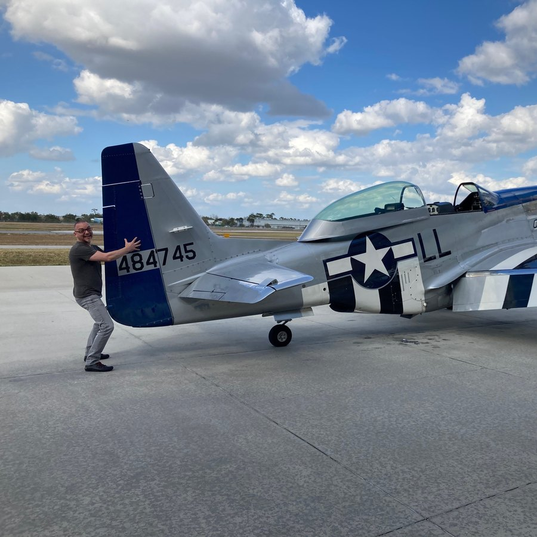
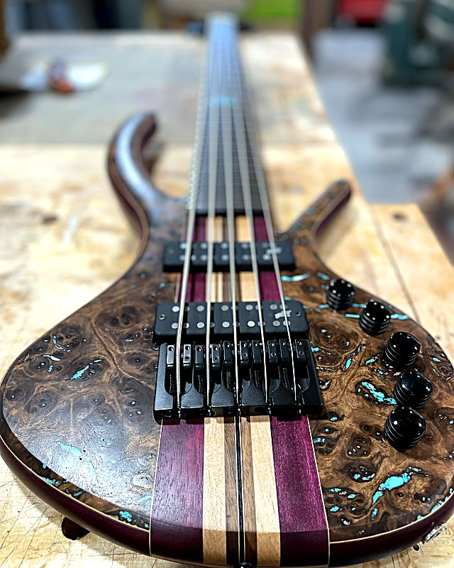
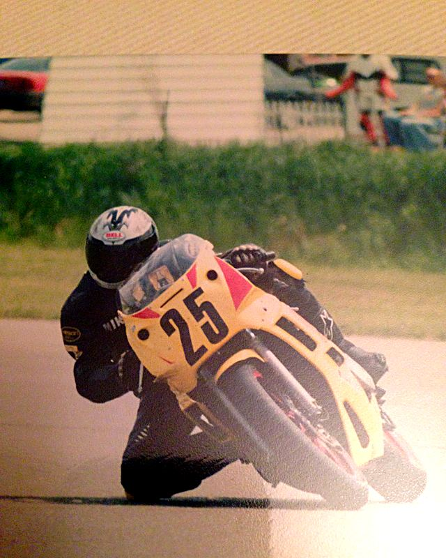
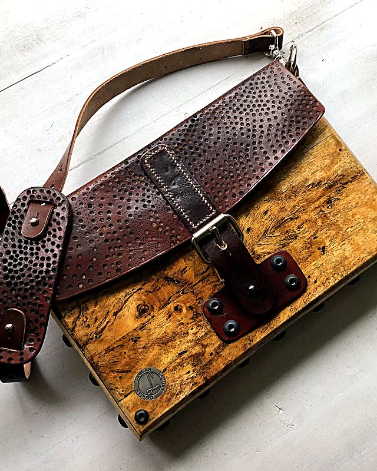
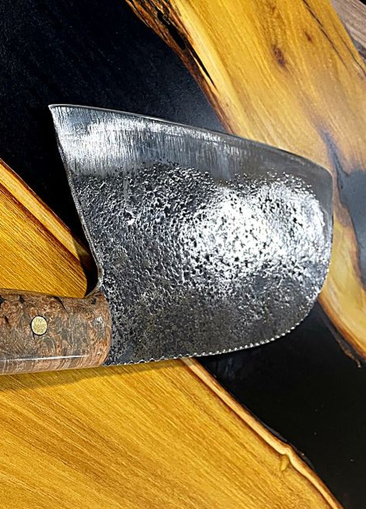
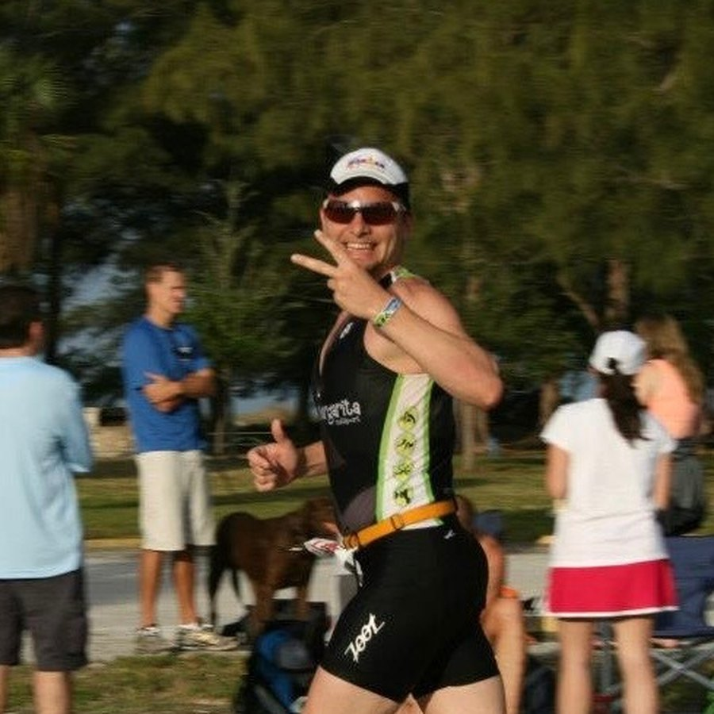
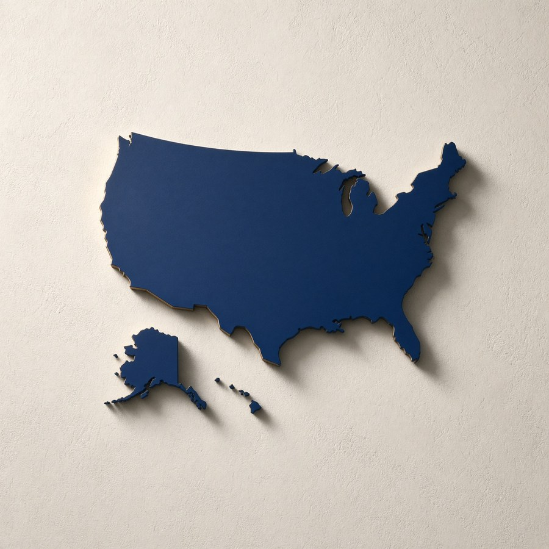

27Times invertedI was the one holding the stick.
About
Russ Laggan forges custom steel knives in his workshop, builds bass guitars from raw wood, races motorcycles, flies a WWII-era P-51 Mustang, and competes in triathlons. If you overheat the steel, it becomes brittle. If you rush the sanding, the finish never shines. He brings that same craftsman's precision to the work.
A guy who sold concrete countertops walked into real estate in 2005. Within two and a half years he was running his first office, at 34. Not because of connections. Because of results. He then led a team of 15 to recruit 1,692 agents in a single year.
He is the author of Be Followable and the creator of the Spheramid System. He helps people get out of what he calls the death loop, where success leads to burnout, by building something that attracts people rather than chasing them.
The maker








The whiteboard
Every time Russ teaches, it starts at the whiteboard. Three stick figures. Three questions.
01
Tell the truth to yourself. Face it. That is where the change starts.
02
Name it. Get specific about the destination before you start walking.
03
Build the system. Small steps. That is the Spheramid way.